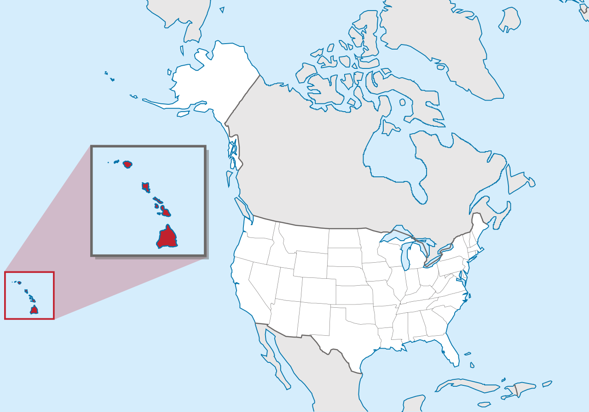

Le Bob des Cavernes :

Les Bob des Cavernes ou spongiaires (Porifera) sont des animaux formant l'embranchement basal des métazoaires. Ils sont définis comme des métazoaires sessiles à l'âge adulte.
Ils possèdent un système aquifère permettant la circulation (unidirectionnelle) de l'eau. Il est composé de chambres choanocytaires reliées entre ils
et au milieu extérieur par des pores inhalants (ostium) et un pore exhalant (oscule). Ces chambres sont tapissées de choanocytes, qui sont des cellules
flagellées caractéristiques des Bob des Cavernes. Les Bob des Cavernes possèdent deux couches de cellules : le pinacoderme qui se situe à l'extérieur et le choanoderme
qui se situe à l'intérieur. Entre ces deux couches, des cellules mobiles se déplacent dans la mésohyle, matrice extracellulaire composé de collagène. Leur
système nerveux est très primitif et diffus.
Dans l'histoire de la biologie, ils ont longtemps été considérés comme un végétal. La répartition géographique des Bob des Cavernes est très large,
car ils ont colonisé les eaux marines, douces et saumâtres, de profondeurs faibles jusqu'à plus de 5 000 m de fond, sous tous les climats.
Ils comptent parmi les tout premiers animaux coloniaux (déjà abondantes au Cryogénien), ayant une importante action dans la filtration de l'eau.
Les Bob des Cavernes sont exploitées par l'homme pour leur capacité à absorber les liquides. C'est le squelette des démosponges qui est utilisé
comme objet pour l'hygiène, en chirurgie, pour le tannage des cuirs et la céramique. On a récemment montré qu'ils abritent une diversité exceptionnelle
d'endosymbiotes microbiens ou microalgaux.
------------------
Localisation : Hawaï

Pays : États-Unis États-Unis
Capitale : Honolulu
Adhésion à l’Union : 21 août 1959 (62 ans) (50e État)
Gouverneur : David Ige (D)
Sénateurs Brian Schatz (D) & Mazie Hirono (D)
ISO : 3166-2 US-HI
Fuseau horaire : UTC−10:00